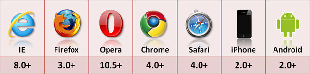

每个cookie < 4K
localStorage < 5M
localStorage的使用也是遵循同源策略的，所以不同的网站直接是不能共用相同的localStorage
优势
1、localStorage拓展了cookie的4K限制
2、localStorage会可以将第一次请求的数据直接存储到本地，这个相当于一个5M大小的针对于前端页面的数据库，相比于cookie可以节约带宽，但是这个却是只有在高版本的浏览器中才支持的
局限
1、浏览器的大小不统一，并且在IE8以上的IE版本才支持localStorage这个属性
2、目前所有的浏览器中都会把localStorage的值类型限定为string类型，这个在对我们日常比较常见的JSON对象类型需要一些转换
3、localStorage在浏览器的隐私模式下面是不可读取的
4、localStorage本质上是对字符串的读取，如果存储内容多的话会消耗内存空间，会导致页面变卡
5、localStorage不能被爬虫抓取到
使用

window.localStorage//boolean 浏览器是否支持
写入(3种形式)
window.localStorage["a"] = 1;
window.localStorage.b = 1;
window.setItem('c',3);
读取
var a = window.localStorage.a;
var b = window.localStorage["b"];
var c = window.localStorage.getItem("c");
var d = window.localStorage.key(d);
修改
window.localStorage.a = 4;
删除
window.localStorage.clear();// 清除据
window.localStorage.removeItem("a");// 删除a
1/12/2018 12:04:41 PM